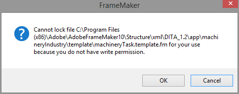

Modifying FrameMaker 10 structure templates in Windows 8.1¶
If part of your work in Adobe FrameMaker 10 involves modifying the template of a structured app, then you might encounter a permissions error message in Windows 8/8.1 indicating you do not have access to the template/file.
In this article, we’ll take a look at the basics of finding the location of a template, adding user permission access, and making a small modification to the FrameMaker structured template.
Locating the Template¶
If you’re working on a document created in FrameMaker by a different writer, you may need to check the template location before making modification to the styles.
To locate the template used in FrameMaker 10:
Open the file in FrameMaker 10.
Click StructureTools then click Edit Application Definitions. The
structappsfile opens in a separate tab.
On the Structure View panel, locate the XML Application used for the document. In this example, the
DITA_1.2_machineryTaskis used. The full path of the template is highlighted in thestructappsdocument.
Modifying Permissions in Windows 8.1¶
After you have the full path of the template, you can now navigate to the FrameMaker templates folder. Take note that you should always backup the original templates folder in case you want to use the original styles.
Note
Normally, you shouldn’t have any permission problems opening and editing templates whether you’re using Windows 7 Home Premium or Windows 8/8.1. Modify the permissions only if FrameMaker indicates that you aren’t allowed to make changes.
To access the templates folder and add permissions:
In Windows 8.1, press Windows+E to open File Explorer.
Navigate to the path provided by the
structappsfile.Right-click on the templates folder and click Properties.
Click the Security tab then the Edit button.
Click the Add button.
In the Select Users or Groups window, input everyone on the text box and click Check Names.
Click OK.
In the Permissions for template window, select the Full control and Modify check boxes under the Allow column.
Click Apply then OK.
Click the General tab on the Properties window.
Clear the Read-only box on the Attributes area. Click Apply.
In the Confirm Attribute Changes window, select Apply changes to this folder, subfolders and files then click OK.
Click OK to close the Properties window.
Modifying the Template¶
Using the original machinery task template, the Short Description text had a background color of light grey. We will modify the machinery task template to remove the background color.
To edit the template:
Using the path listed in the
structappsfile, open the FrameMaker template. In this example, the filemachineryTask.templateis used.Since
Short Descriptionis a paragraph tag, click Ctrl+M to open the Paragraph Designer.On the Paragraph Tag item, select
short.descriptionon the list.
Clear the Background Color box.
Click Update All then click Continue on the Paragraph Formatting message.
Save the template. You should no longer see the error message indicating the file is locked.
If you reopen the file that used the template, any changes you made on the template will be reflected on the document. In our example, the short description no longer has the light grey background.